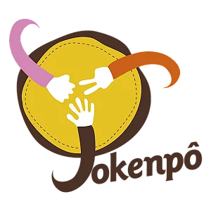
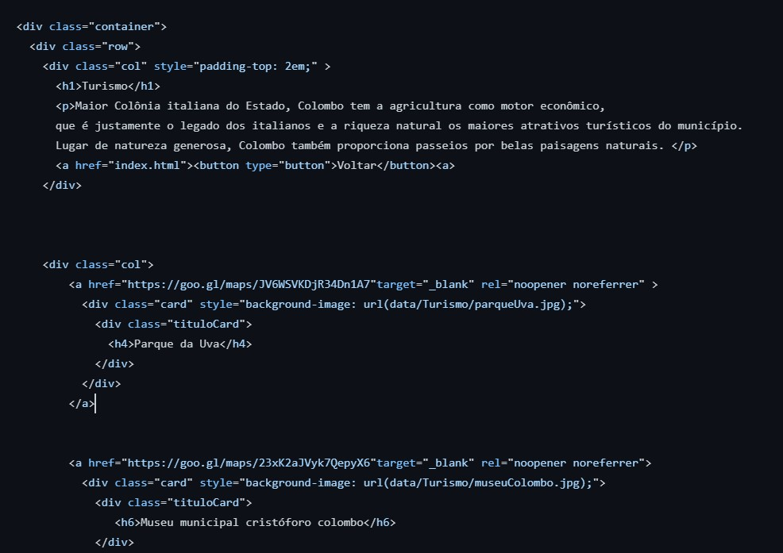
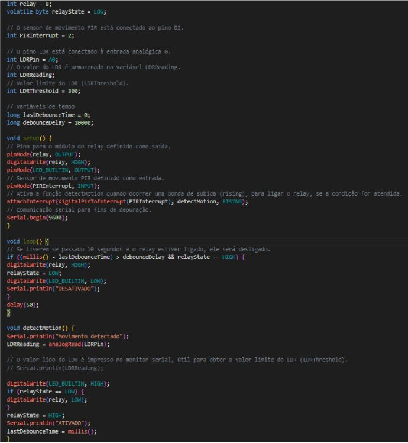

Raciocinio algoritmo
Jokempo
Para a matéria de RA, um dos projetos criados foi o jogo "Jokempo"
Trecho do código:
def modo():
while True:
try:
modo = int(input("Digite:\n 1 para humano x humano\n 2 para humano x
computador\n "
"3 para computador x computador\n "))
if modo == 1:
print("Humano x humano")
jogo_humano_humano()
break
elif modo == 2:
print("humano x computador")
jogo_humano_computador()
break
elif modo ==3:
print("computador x computador")
jogo_computador_computador()
break
else:
print("Invalido, recomeçe o processo")
except ValueError:
print("Invalido, recomeçe o processo")
Resolução de Problemas com Lógica
Tabela verdade
Não houve projetos em código para essa matéria, porém uma grande parte foi a utilização da tabela verdade
Experiência Criativa
Criação de um site
Para a matéria de Experiência Criativa, um dos projetos criados foi um site sobre o turismo de Colombo
Sistemas Ciberfisicos
Trabalho com arduino
Para a matéria de sistemas Ciberfisicos, um dos projetos criados foi a implementação de um arduino criado em um trabalho em grupo